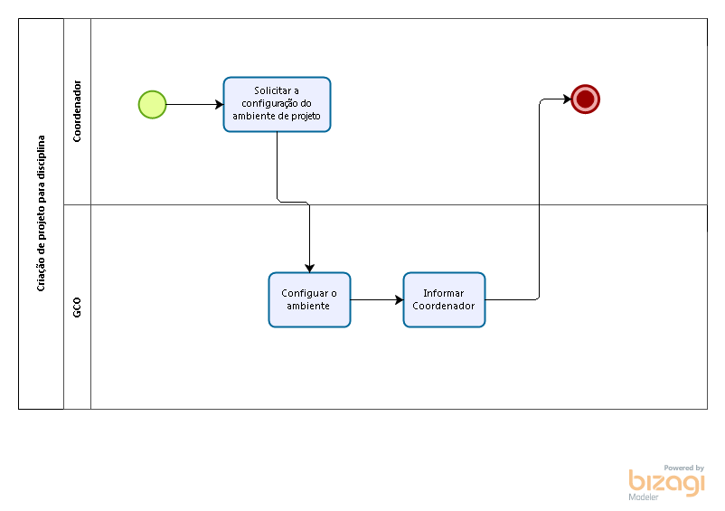

Criação de projeto de disciplina
Lista de processos
Gestor
Gestor de infra estrutura
Propósito
Criar e configurar ferramentas para novo projeto a ser desenvolvido em uma disciplina.
Descrição
Configurar as ferramentas utilizadas pela Fábrica de Software para dar suporte ao desenvolvimento do projeto na disciplina.
Políticas
Fluxo

Atividades
Solicitar a configuração do ambiente de projeto
Responsabilidade
Coordenador
Tarefas
- Solicitar por email a configuração do ambiente de projeto
Pré-Condições
- Projeto aprovado pela Gestor de portifólio
Entradas
- Nome do projeto
- Data de ínicio
- Data de encerramento
- Seleção de ferramentas a serem utilizadas no projeto dentro do conjunto previamente admitido pela Fábrica de Software
Critérios de Saída
- ?????
Produto
- Solicitação de configuração de ambiente de projeto realizada
Configuar o ambiente
Responsabilidade
Gestor de configuração
Tarefas
- Configurar ferramentas selecionadas na solicitação.
Pré-Condições
Entradas
- Solicitação de configuração de ambiente de projeto
Critérios de Saída
Produto
- Ferramentas selecionadas configuradas
Informar Coordenador
Responsabilidade
Gestor de configuração
Tarefas
- Comunicar coordenador sobre a conclusão da configuração do ambiente do projeto de disciplina
Pré-Condições
Entradas
Critérios de Saída
Produto
- Coordenador comunicado
Avaliação (Conforme estava no quadro do template do processo)
Templates
Auditoria
Checklist
Métricas
Base Histórica
Glossário